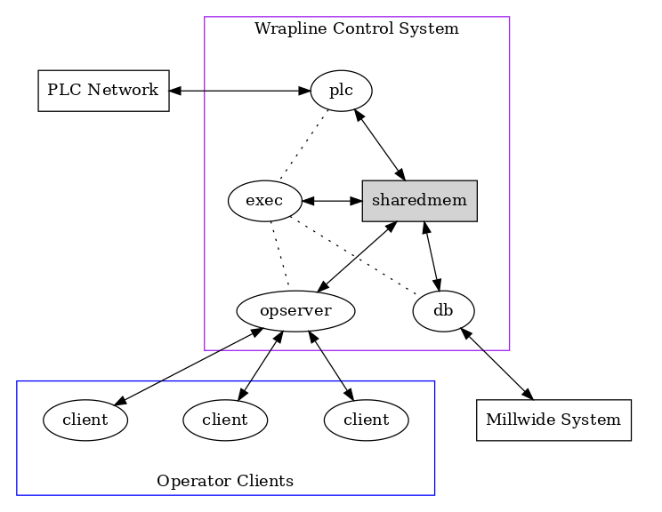
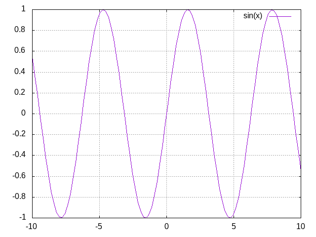

Org-mode exporter template for testing
1 Comment
ID: 3897afe8-36d6-4b4b-83b2-de19c268f996 PUBDATE: <2018-04-03 Tue 21:59>
2 Property
URL: http://localhost ID: e8cdddae-a0ad-4cb9-bb70-25e36cfe4d17 PUBDATE: <2018-04-03 Tue 21:59>
3 Paragraph
ID: 6268e637-e022-4a5d-8c3e-d3975841334e PUBDATE: <2018-04-03 Tue 21:59>
3.1 horizontal rules
ID: 75ae6f4c-9b97-485f-a41b-07ff6f5b706e
AAAAAAAAAAAAAA
BBBBBBBBBBBBB
4 Formatting text
ID: c840528f-b708-412a-b33d-2212d8c7ec88 PUBDATE: <2018-04-03 Tue 21:59>
4.1 bold & italic
ID: fb4ca44c-6b6d-4f32-a489-8d6281363300
- bold text
- italic text
4.2 monospace, superscript and subscript
ID: 6db24646-62fa-49ea-adaa-a56fb8d4bfb7
- monospaced typewriter font for
inline code - monospaced typewriter font for
verbatim text deleted text(vs. inserted text)- text with superscript, such as 210
- text with subscript, such as H2O
4.3 Inline code
ID: 50e9abd8-45ed-42d1-8ba5-d3209ecc4ded
inline code
If you have \equal, \quot or \rsquo in code which you want to surround by =code=.
5 Smart punctuation
ID: a738b9bc-b97b-4901-bb01-3eb3f6cc995d PUBDATE: <2018-04-03 Tue 21:59>
If the XXX option is specified, Org mode will produce typographically correct
output, converting straight quotes to curly quotes, --- to em-dashes, -- to
en-dashes, and ... to ellipses.
6 Plain lists
ID: fbbd5b73-5594-4db4-94e3-d8141dc17a36 PUBDATE: <2018-04-03 Tue 21:59>
6.1 un-ordered lists
ID: 067cafb7-cd55-47b1-b54b-6e6ff4dc41ce
- one
- two
- three
- ☐ one
- ☐ two
- 1
- 2
- Item with some lengthy text wrapping hopefully across several lines. We add a few words to really show the line wrapping.
- Bullet.
- Bullet.
- Bullet.
- Bullet.
6.2 ordered lists
ID: 02dc3830-0639-44b0-9799-f971853661fe
- Arabic (decimal) numbered list item. We add a few words to show the line
wrapping.
- Upper case alpha (letter) numbered list item.
- Lower alpha.
- Lower alpha.
- Upper alpha.
- Upper case alpha (letter) numbered list item.
- Number.
6.2.1 ordered list with jumping numbers
ID: 0220a1cf-2fc4-47dd-a2bf-6d3637d80529
- line one
- We start with point number 2.
- Automatically numbered item.
6.3 checklists
ID: 5e91b15b-79d1-4ea5-b679-0ab67ee3e2ab
- ☑ Checked.
- ☐ Half-checked.
- ☐ Not checked.
- Normal list item.
6.4 definition list
ID: e154cd3e-3b23-42ce-abeb-c54518f6ee85
- First term to define
- Definition of the first term. We add a few words to show the line wrapping, to see what happens when you have long lines.
- Second term
Explication of the second term with inline markup.
In many paragraphs.
6.5 separating lists
ID: 342c7589-ce8c-4eee-9fcb-07eb72d9eec8
- apples
- oranges
- bananas
- carrots
- tomatoes
- celery
7 Tables
ID: 335af6e1-9cad-47c4-acb4-f4f6b21d7183 PUBDATE: <2018-04-03 Tue 21:59>
Tables are one of the most refined areas of the Org mode syntax. They are very easy to create and to read.
7.1 simple table
ID: d8d91db5-e30d-48b3-b9ac-c5c521bb78bc
| column 1 | column 2 |
|---|---|
| Cell in column 1, row 1 | Cell in column 2, row 1 |
| Cell in column 1, row 2 | Cell in column 2, row 2 |
7.2 Table with aligned cells
ID: f9fa207e-1c43-4dd6-a08e-888023bca5e9
| 1 | 2 | 3 |
|---|---|---|
| Right | Center | Left |
| xxxxxxxxxxxx | xxxxxxxxxxxx | xxxxxxxxxxxx |
7.3 Header row
ID: 7200d3ae-4bb1-40bd-9055-9932371e6448
| Name of column 1 | Name of column 2 | Name of column 3 |
|---|---|---|
| Top left | Top middle | |
| Right | ||
| Bottom left | Bottom middle |
8 Hyperlinks
ID: cc6c5740-3a87-402e-addd-d42c6e77b6df PUBDATE: <2018-04-03 Tue 21:59>
8.1 Internal links
ID: d0993c1f-7a37-4972-afea-bb8cc35dde36
8.1.1 radio target link
ID: 912f6a31-553a-4e73-be0c-769643d56cc2
Here is a radiotargetlink
Reference previous a radiotargetlink.
8.2 External links
ID: 147feca3-3651-4c29-9e46-b9c08f332d4b
9 Drawers
ID: 2d62890f-ced7-4f7b-9746-8fa1835d5704 PUBDATE: <2018-04-03 Tue 21:59>
9.1 test drawer
ID: 8ac3c6c8-14ef-4b21-8efd-8dc5d91daee0
This is inside the drawer.
10 Dynamic blocks
ID: a839d0ae-63bc-42fa-84fe-92b33b9d533c PUBDATE: <2018-04-03 Tue 21:59>
| Headline | Time | |
|---|---|---|
| Total time | 0:00 |
11 ASCII export
ID: af09b5b2-5882-4a36-88f5-d00733fad636 PUBDATE: <2018-04-03 Tue 21:59>
12 Inline Images
ID: 14207a95-e121-47fd-9bba-63f4392e7181 PUBDATE: <2018-04-03 Tue 21:59>

12.1 Image attributes and values
ID: d89c0016-df43-44f3-88b8-535975506317
13 Footnote
ID: 6c577429-a3f6-4c14-9794-c50a3753e49f PUBDATE: <2018-04-03 Tue 21:59>
A footnote is defined in a paragraph that is started by a footnote marker in square brackets in column 0, no indentation allowed. The footnote reference is simply the marker in square brackets, inside text. For example:
The org homepage 1 now looks a lot better than it used to.
14 Entity
ID: a4dc8312-be47-4a4c-bdbe-ea4c36fbd186 PUBDATE: <2018-04-03 Tue 21:59>
1 + 1 = 2
Like € with
15 LaTeX
ID: 0f7f4e61-cc38-45d4-a821-72871d220707 PUBDATE: <2018-04-03 Tue 21:59>
15.1 Inline LaTeX
ID: 0cf98440-5210-4193-8f8e-7e85abbae324
This is inline latex \[ 1 + 2 = 3 \]. and \(3 * 3 = 9\) .
15.2 LaTeX block
ID: 3fcbf355-d843-4cf0-9679-f406e83ba8cc\begin{equation} \label{sqrt equation} y = \sqrt{r^2 - x^2} \end{equation}
15.3 a more complex latex block
ID: 85b239ed-cfdd-4dbd-850d-9a80b0957da0\begin{minted}[mathescape, linenos, numbersep=5pt, gobble=2, frame=lines, framesep=2mm]{csharp} string title = "This is a Unicode π in the sky" /* Defined as \(\pi=\lim_{n\to\infty}\frac{P_n}{d}\) where \(P\) is the perimeter of an $n$-sided regular polygon circumscribing a circle of diameter \(d\). */ const double pi = 3.1415926535 \end{minted}
16 Blocks
16.1 Quote block
This is a quote block.
16.2 LaTeX export block
16.3 ASCII export block
tree .
16.4 HTML export block
helllo, worlllld!!!
17 src blocks
ID: 0bbfd97e-52f8-4e75-968b-79a71f5a316a PUBDATE: <2018-04-03 Tue 21:59>
17.1 syntax highlighting
ID: 68e01fc8-0e03-4179-8ab4-a23ce58b9a20
(defun hello (name) (print (format "Hello, %s" name))) (hello "stardiviner")
Hello, stardiviner
17.2 escape math formulas in src block
ID: cbed519a-be32-47f8-a7c4-beb408f632e9
;; Defined as $\pi=\lim_{n\to\infty}\frac{P_n}{d}$ where $P$ is the perimeter ;; of an $n$-sided regular polygon circumscribing a ;; circle of diameter $d$. (prin1 "hello, world!")
17.3 highlight code tags
ID: 92432324-3cf9-4152-aeb8-d5539137240f
;;; TODO does this code tag highlighted? ;;; TODO: what about this one? ;;; XXX ;;; BUG ;;; NOTE (prin1 "yes")
17.4 src block with inline image result
ID: 9e5200c5-3655-477e-ab20-b9a9fdda3857
set grid plot sin(x)

18 中文测试
ID: 87084b84-e7f2-4eda-b689-44155df7fd18 PUBDATE: <2018-04-03 Tue 21:59>
这是中文段落
19 Reference to previous pages links
ID: e056308d-32c2-470a-b623-1635665b5a20 PUBDATE: <2018-04-03 Tue 21:59>
19.1 radio target link reference
ID: 3a96566e-c212-4174-a576-08a154502a33
20 Footnotes
ID: f932913d-ca3e-4895-b9fc-c19b7a79d99d PUBDATE: <2018-04-03 Tue 21:59>
Footnotes:
The link is: http://orgmode.org